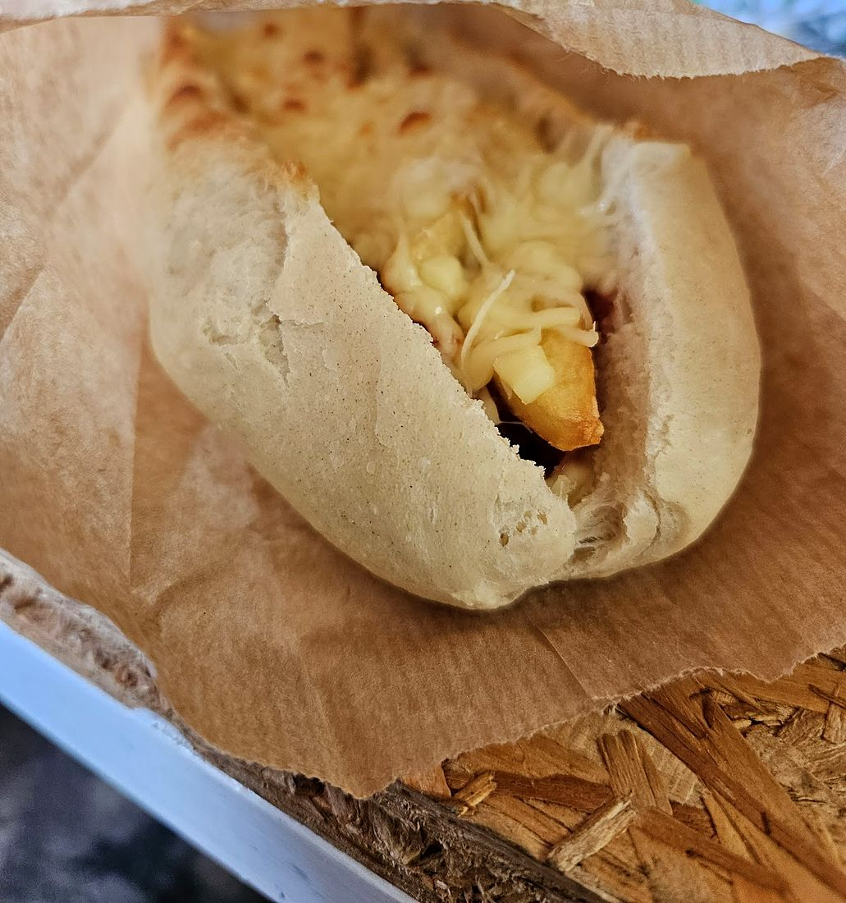
Les kebabs
Version réunionnaise comprise : on y glisse du sarcive ou du magret.
- Poulet
- Bouchon
- Agneau
- Steak poulet
- Sarcives
- Merguez
- Saumon
- Magret
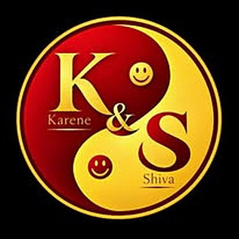
Snack · Sainte-MarieKSK · chez Karene & Shiva
Notre mixité culturelle culinaire mahoraise et réunionnaise
, en barquette, du lundi au vendredi, en plein centre de Sainte-Marie.
Le KSK
Sur le logo, un yin-yang rouge et or et deux sourires : Karene d’un côté, Shiva de l’autre. Dans les marmites, c’est la même rencontre : les saveurs de Mayotte et celles de La Réunion, cuisinées chaque matin pour le midi.
Pilao poulet, romazava, boucané bringelle, rougail morue, cabri massalé… À la carte du jour, trois plats en barquette, et autour, des kebabs, des salades et des pâtisseries maison.
« Les spécialistes des saveurs créoles et mahoraises à Sainte-Marie. »
— Adie La Réunion, qui accompagne l’aventure familiale du KSK
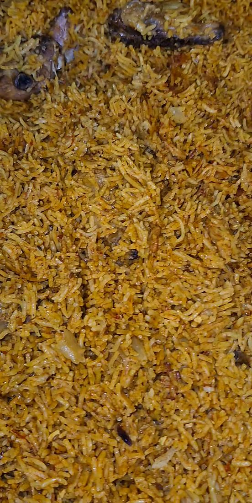
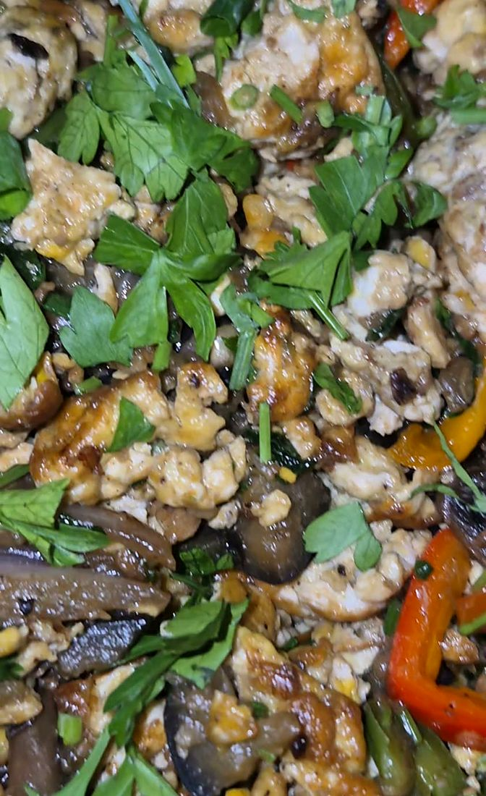
Le rituel du KSK
Chaque jour, le KSK publie ses marmites sur Facebook : on regarde, on salive, on commande.
Nos plats du jour en préparation au KSK
: les oignons, les herbes, les piments, la fumée.
Au 0693 60 63 14, avant 11h car très compliqué ensuite de répondre au téléphone
.
Ça y est nos plats sont en vitrine
: sur place, au 85 rue de la République.
Ouvert du lundi au vendredi, de 11h à 20h : la vitrine reste garnie du midi jusqu’au soir.
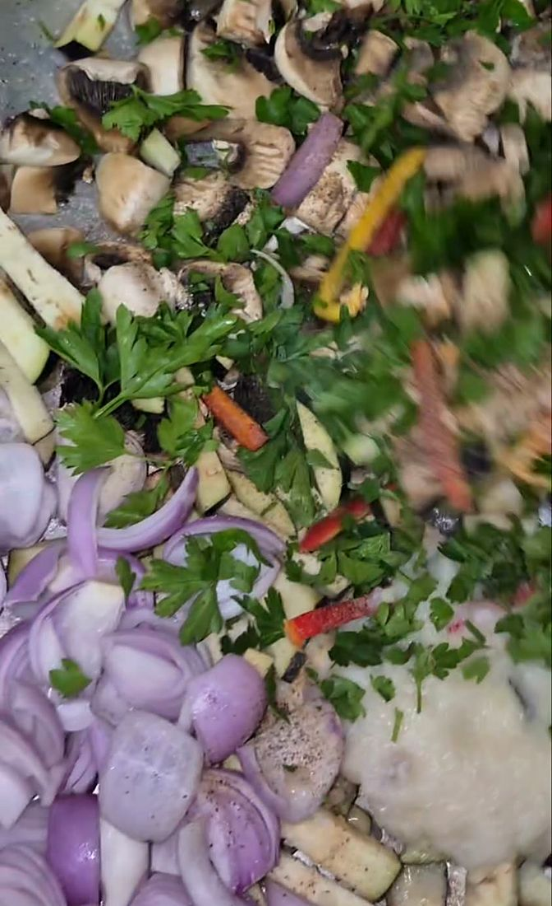
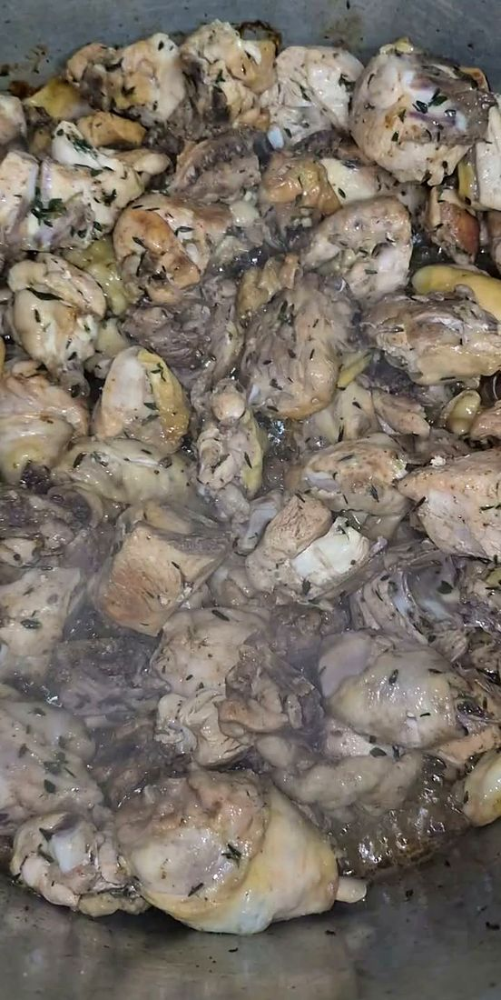
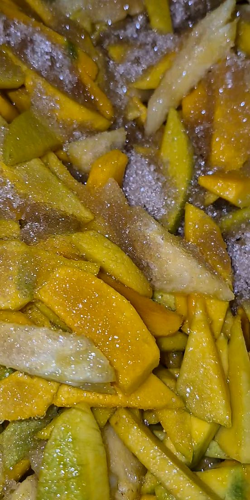
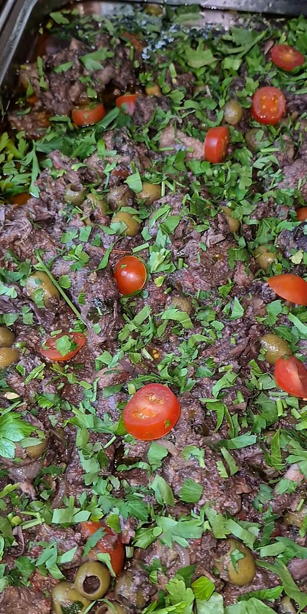
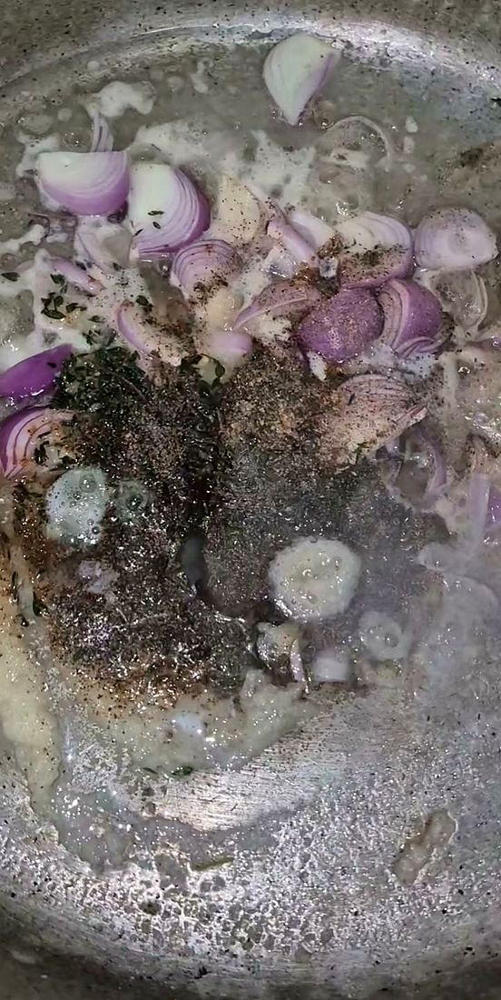
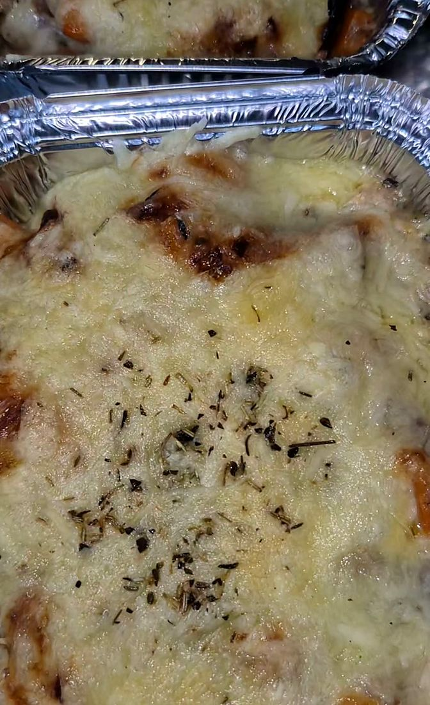
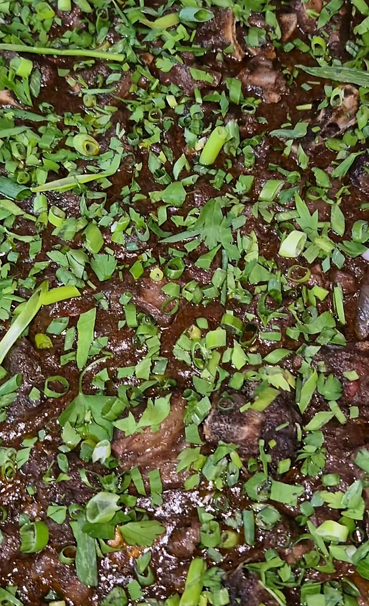
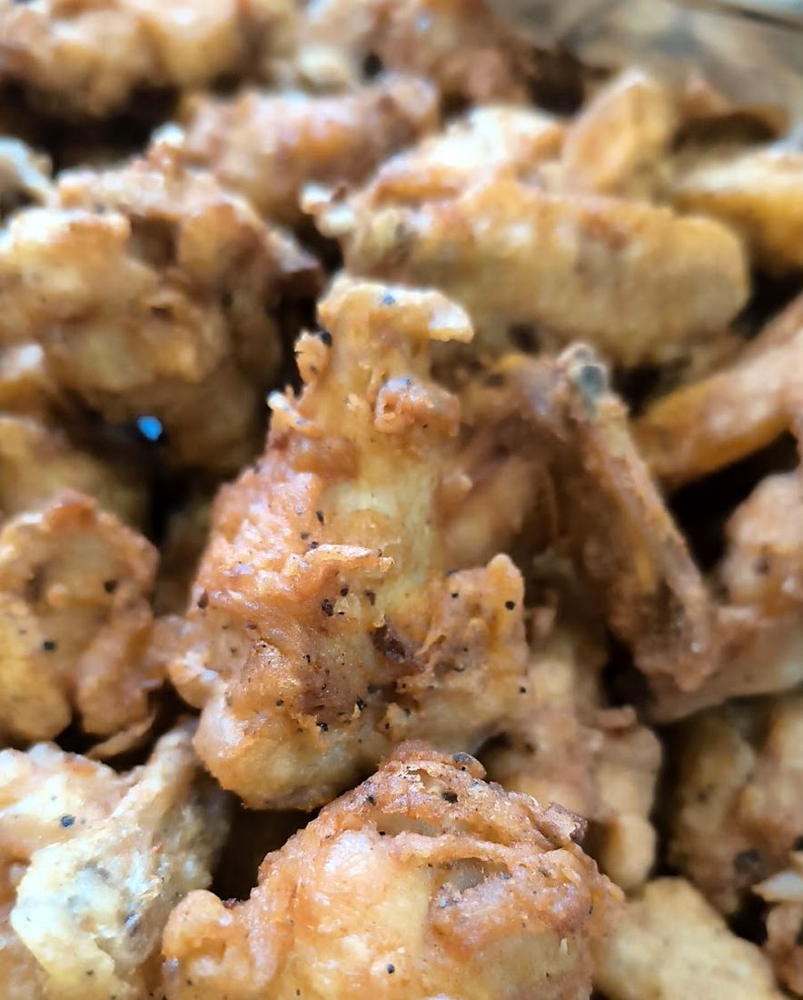
← Faites glisser les marmites →
L’ardoise du jour
Chaque jour, l’ardoise change. Un jour romazava, pilao poulet et boucané bringelle ; un autre, chop suey poulet, civet canard et carry poisson. Il y a aussi les jours poissonnerie, et les envies de saison.
Plats cités dans les publications du KSK et dans l’article de Clicanoo.
Réserver ma barquetteCôté snack

Version réunionnaise comprise : on y glisse du sarcive ou du magret.
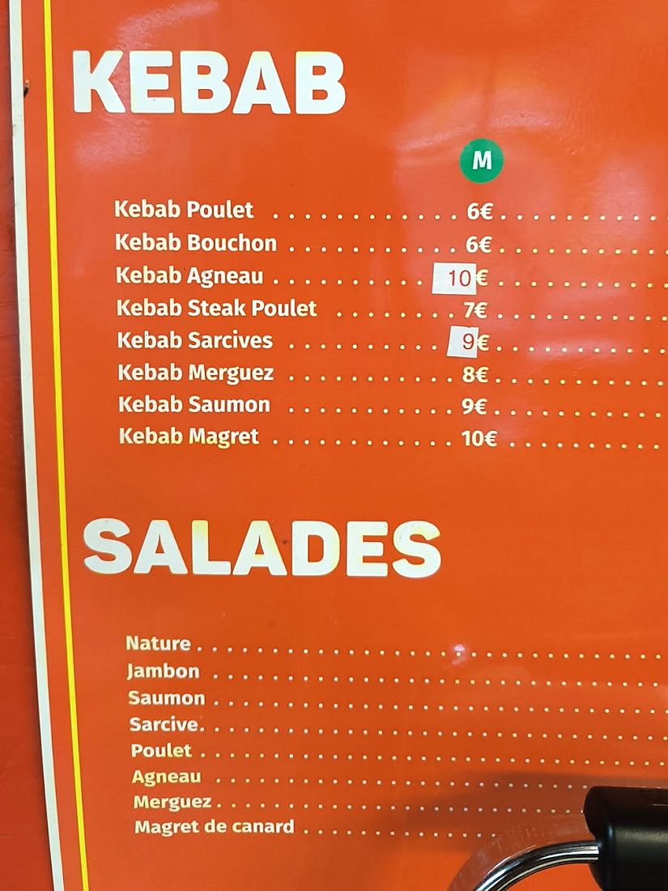
Sur la carte orange, à côté des kebabs.
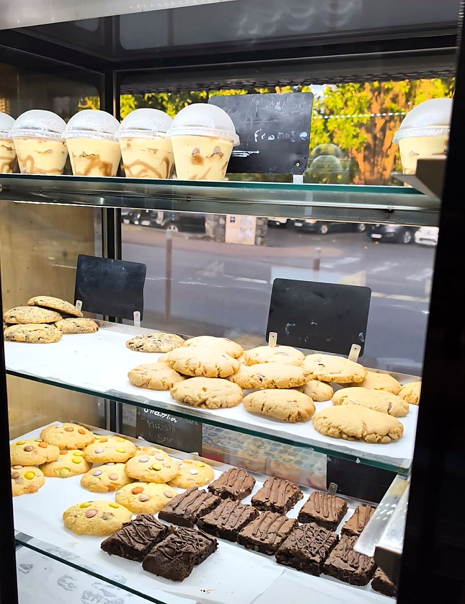
Cookies, brownies, desserts en pots… et les fameux cookies Dakatine. Pour finir sur une touche de feu : le piment la pâte du chef, vendu en pots.
« KSK est une bonne adresse où aller chercher son “bouché manzé”, la cuisine y est bien faite, et les pâtisseries maison aussi. »
Clicanoo, « Ces petits restaurants qui régalent pour pas cher », 29 avril 2024« Le cabri s’en arrange […] en nous envoyant au nez des salves odorantes appétissantes. »
Clicanoo, à propos du cabri massalé« Le rougail morue s’en sort presque mieux. […] Du bel ouvrage comme on dit […] Les grains en accompagnement sont excellents. »
Clicanoo, à propos du rougail morue« Les cookies dakatine sont une tuerie, et vous comblent efficacement les derniers creux. »
Clicanoo, côté pâtisseries maisonUne histoire de famille
Le KSK, c’est une aventure entrepreneuriale en famille : Karene et Shiva, rejoints par leur fils. Une évolution accompagnée par l’Adie La Réunion, que le KSK remercie : Et oui merci Adie La Réunion de nous avoir permis cette évolution
.
Et le KSK vit avec sa ville : fin octobre 2026, la mission du jour accomplie
, le KSK donnait rendez-vous à tous au complexe sportif de Flacourt, pour la journée Octobre Rose de mobilisation contre le cancer.
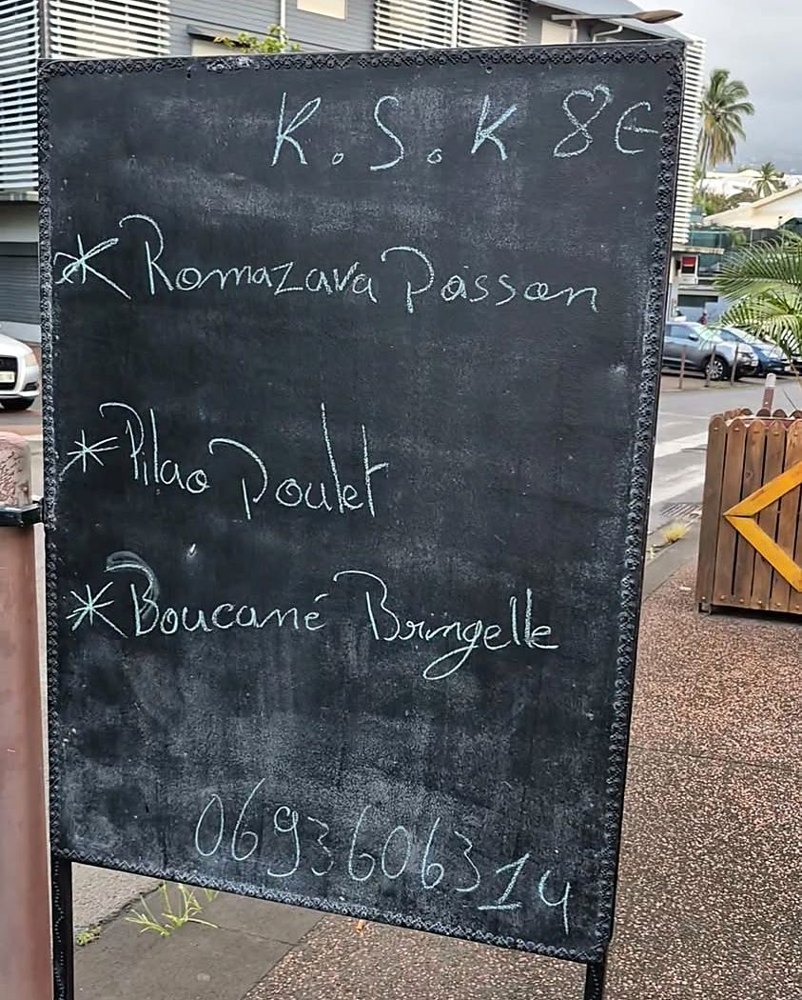
Commander
On choisit, on compte, et le message part tout prêt sur WhatsApp, au 0693 60 63 14. Il ne reste plus qu’à passer la récupérer.
Astuce du KSK : commandez avant 11h, le téléphone sonne beaucoup ensuite !
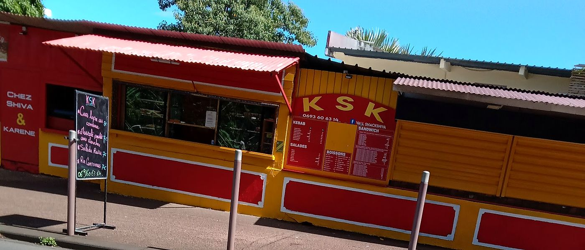
« Aisément repérable de loin avec ses couleurs vives » (Clicanoo)85 rue de la République
97438 Sainte-Marie, centre-ville
Lieu-dit place de Dubaï, près du rond-point côté église.
Appel ou WhatsApp. Et chaque jour, les marmites en direct sur Facebook et Instagram.